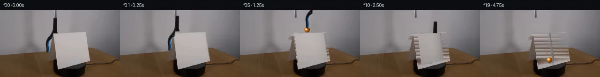

![首帧]()

Round 00
2026-11-04T20:12:56.305566+00:00像素候选变化代码 +443/−0inspection 更新
pixels 10a31cb9c634e98e · code a82021f65959d889
查看本轮 generate.py 真实 diff
--- previous/generate.py
+++ current/generate.py
@@ -0,0 +1,443 @@
+"""PixelWorld-Text case_0004 generator.
+
+Scene: an off-white cardstock standing on a black platform (on a wooden
+table) rotates clockwise about a vertical axis (right edge recedes from the
+camera). A blue-black grabber tool lifts an orange tennis ball above the
+card, lowers it behind the card, releases it on the platform, and retracts;
+near the end the card is nearly edge-on and the resting ball is revealed.
+
+Everything is local pixel math: measured masks, an inverse-mapped card
+texture, a row-inpainted clean plate with matched static grain, bilinear
+sub-pixel sprite compositing and analytic sphere shading. Frame 00 is the
+byte-exact supplied first frame.
+"""
+from pathlib import Path
+import numpy as np
+from PIL import Image, ImageDraw, ImageFilter
+from scipy import ndimage
+import artifact_io
+
+ROOT = Path(__file__).parent
+rng = np.random.default_rng(4)
+
+# ---------------------------------------------------------------- geometry
+H, W = 144, 256
+# frame-0 card quad corners (screen, y down): TL TR BR BL
+C0 = np.array([[114.0, 48.0], [184.0, 48.0], [191.0, 108.0], [123.0, 119.0]])
+
+frame0 = np.array(Image.open(ROOT / 'first_frame.png').convert('RGB'))
+
+# ----------------------------------------------------------------- masks
+def biggest_component(m):
+ lbl, n = ndimage.label(m)
+ if n == 0:
+ return m
+ sizes = ndimage.sum(np.ones_like(lbl), lbl, range(1, n + 1))
+ return lbl == (1 + int(np.argmax(sizes)))
+
+mx = frame0.max(2)
+blue = frame0[:, :, 2].astype(int) - frame0[:, :, 0].astype(int) > 16
+
+# grabber tool: blue jaw or very dark pixels inside its ROI
+tool_roi = np.zeros((H, W), bool)
+tool_roi[17:94, 95:123] = True
+tool_mask = biggest_component(tool_roi & (blue | (mx < 92)))
+tool_mask = ndimage.binary_dilation(tool_mask, iterations=1) # AA fringe
+
+# fixed black clamp/guide block on the platform (static foreground)
+block_roi = np.zeros((H, W), bool)
+block_roi[104:119, 104:124] = True
+block_core = biggest_component(block_roi & (mx < 80))
+block_mask = ndimage.binary_dilation(block_core, iterations=1)
+
+# ------------------------------------------------------------ card quad
+def inv_bilinear(pts, q):
+ """Inverse map of screen points into bilinear patch q=[TL,TR,BR,BL].
+
+ Returns s (0 left -> 1 right), t (0 top -> 1 bottom)."""
+ tl, tr, br, bl = q
+ s = np.full(pts.shape[:-1], 0.5)
+ t = np.full(pts.shape[:-1], 0.5)
+ for _ in range(5):
+ st = s * t
+ pos = ((1 - s) * (1 - t))[:, None] * tl + (s * (1 - t))[:, None] * tr \
+ + ((1 - s) * t)[:, None] * bl + st[:, None] * br
+ ps = (1 - t)[:, None] * (tr - tl) + t[:, None] * (br - bl)
+ pt = (1 - s)[:, None] * (bl - tl) + s[:, None] * (br - tr)
+ det = ps[:, 0] * pt[:, 1] - ps[:, 1] * pt[:, 0]
+ d = pts - pos
+ ds = (d[:, 0] * pt[:, 1] - d[:, 1] * pt[:, 0]) / det
+ dt = (ps[:, 0] * d[:, 1] - ps[:, 1] * d[:, 0]) / det
+ s += ds
+ t += dt
+ return s, t
+
+def card_polygon_mask(q, dilate=0):
+ m = np.zeros((H, W), bool)
+ x0, x1 = int(q[:, 0].min()) - 2, int(q[:, 0].max()) + 3
+ y0, y1 = int(q[:, 1].min()) - 2, int(q[:, 1].max()) + 3
+ xs, ys = np.meshgrid(np.arange(x0, x1), np.arange(y0, y1))
+ pts = np.stack([xs.ravel() + 0.5, ys.ravel() + 0.5], 1)
+ s, t = inv_bilinear(pts, q)
+ inside = (s >= 0) & (s <= 1) & (t >= 0) & (t <= 1)
+ m[ys.ravel()[inside], xs.ravel()[inside]] = True
+ if dilate:
+ m = ndimage.binary_dilation(m, iterations=dilate)
+ return m
+
… diff truncated; 356 more lines …